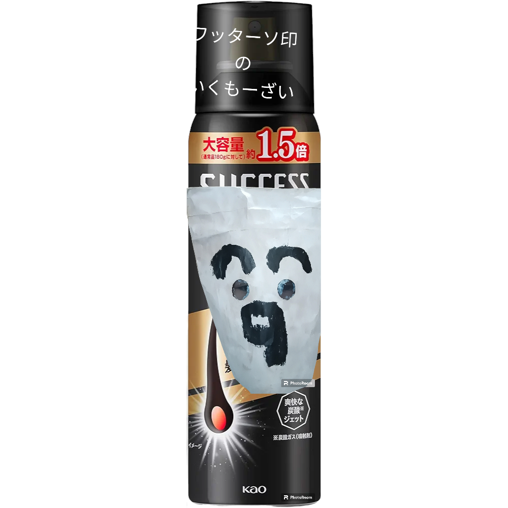
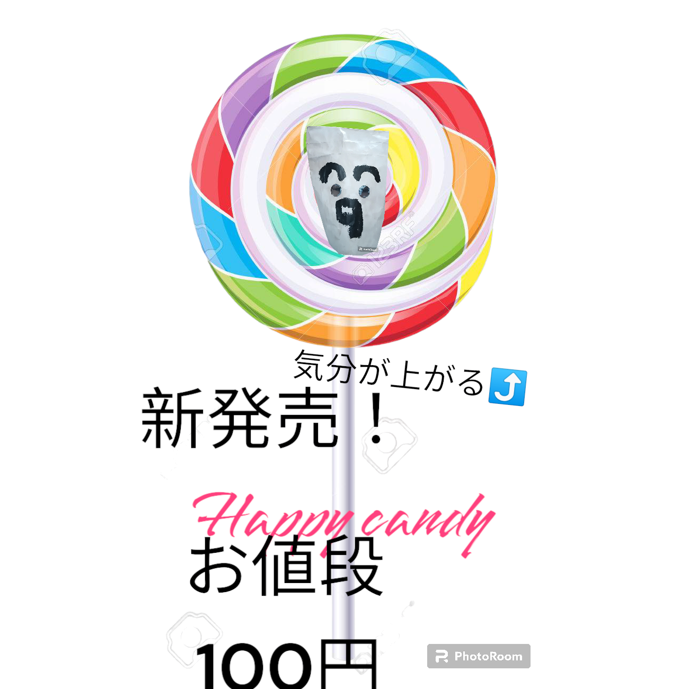
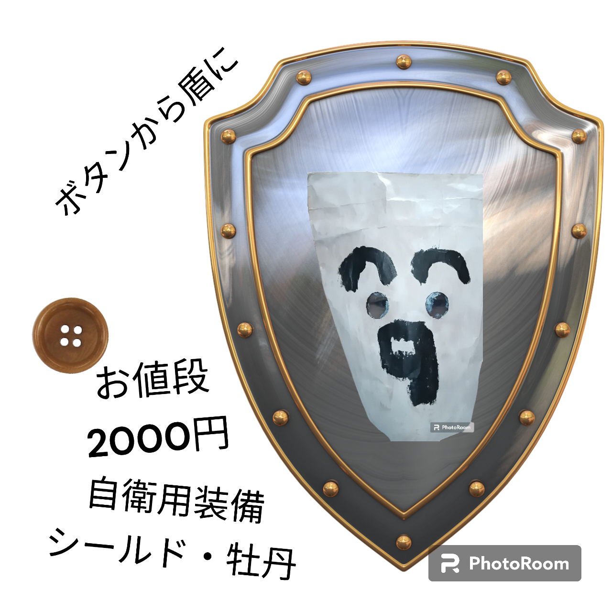

What is ワタソクリエイト
ワタソクリエイトとは、ワ(ワクワク)タ(楽しく)ソ(想像力)をCreate(作り出す)という理由から付けられた社名です
「当社が作る商品で人々を笑顔にしたい」という理由の元
創設されました
ワタソクリエイトの社訓
ワタソクリエイトの社訓は「世界に笑顔と幸せを」を社訓に活動していきます。
当社での商品で世界の人々が笑顔になったり幸せを感じる
ことができたりするような商品開発を行っていきます。
当社開発商品



